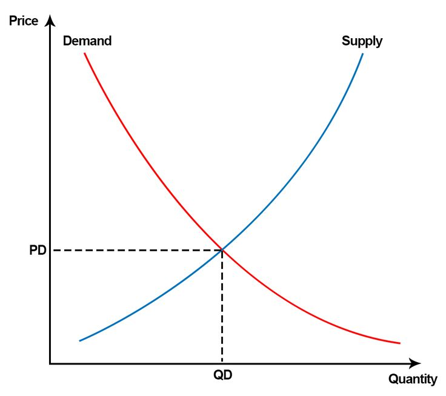
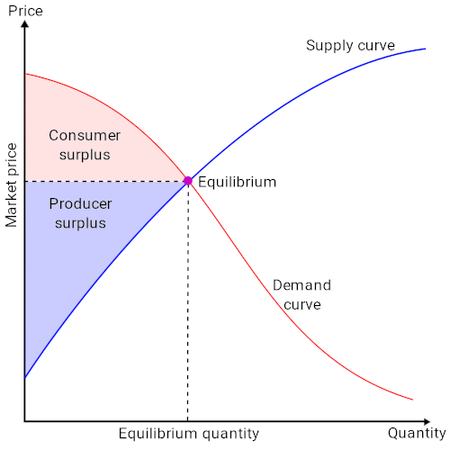
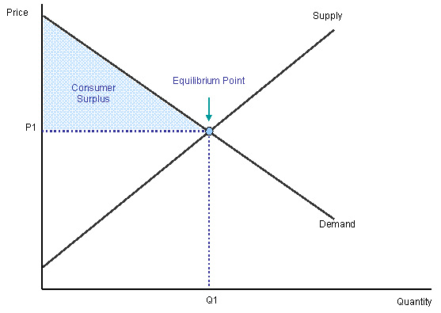
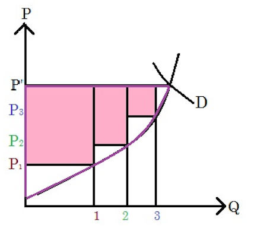
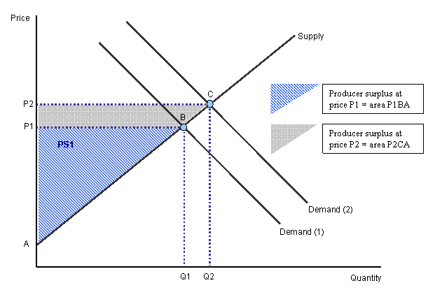

Table of Contents
4. Economic Surplus
4.1. Consumer Surplus
4.1.1. Willingness to Pay and the Demand Curve
4.1.2. The Demand Curve and Consumer Surplus
4.1.3. Impacts of Price Changes on Consumer Surplus
4.2 Producer Surplus
4.2.1. Market Power
4.2.2. Defining Producer Surplus
4.2.3. Impact of Changing Price on Producer Surplus
4. Economic Surplus
4.1. Consumer Surplus
4.1.1. Willingness to Pay and the Demand Curve
In general as the price of a good increases, the quantity demanded of that good decreases.
Learning Objective
Explain the relationship between price and quantity demanded
Key Points
- Demand is the willingness and ability of a consumer to purchase a good under certain circumstances.
- Demand curves are used to estimate behaviors in competitive markets and are often used with supply curves to estimate the market equilibrium price, or the price at which sellers are willing to sell the same amount of a product as the market's buyers are willing purchase.
- An individual's demand is defined by her utility, purchasing power, and ability to make a purchasing decision.
Key Terms
- utility
- The ability of a commodity to satisfy needs or wants; the satisfaction experienced by the consumer of that commodity.
- demand curve
- The graph depicting the relationship between the price of a certain commodity and the amount of it that consumers are willing and able to purchase at that given price.
A demand curve is the graphical depiction of the relationship between the price of a certain commodity and the amount of it that consumers are willing and able to purchase at that price. Demand curves are used to estimate behaviors in competitive markets and are often used with supply curves to estimate the market equilibrium price, or the price at which sellers are willing to sell the same amount of a product as the market's buyers are willing purchase. A demand graph can reflect the preferences of a single consumer, a group of consumers or an entire market . For demand graphs that reflect a group, the individual demands at each price are added together.
Demand is the willingness and ability of a consumer to purchase a good under the prevailing circumstances. It is defined by three elements:
- Individual Utility: An item's utility is based on its ability to satisfy an individual's needs or wants. Some utility is universal; every human needs water to survive so it has high utility for everyone. Some utility is based on personal preference; some people prefer Coke over Pepsi so for them Coke has the higher utility. The more people that find utility in the good the greater the market demand; the greater the individual utility in the product the greater the individual demand.
- Purchasing Power: Demand is measured based on a person's willingness to buy under the prevailing circumstances. If an individual lacks the money to purchase the product, she can't demand it because she cannot afford it.
- Ability to Decide: The individual must be able to choose to make a purchase. Sometimes circumstances may prevent a person from purchasing something they might desire, even if they have the necessary money. For example, an underaged person may not be permitted by law to purchase cigarettes. That person might want the cigarettes and can afford to purchase them, but since it is against the law for him to purchase it, there is no demand.
For the vast majority of goods and services, an increase in price will lead to a decrease in the quantity demanded . There are two exceptions to this general rule.
{kind=link}
The downward sloping demand curve reflects the fact that as price increases, consumers willing to purchase less of the good or service.
Veblen Goods
Veblen goods are expensive luxury products, such as designer handbags and high-end cars. In these rare circumstances, decreasing the price actually decreases the demand for the good. The reason for this is because part of the value of the good is exclusivity. These items are status symbols and lowering the price diminishes the status.
Giffen Goods
Giffen goods are another example where rising prices can lead to increased demand for a product. Giffen goods are very rare and are defined by three characteristics:
- It is an inferior good, or a good for which demand decreases as consumer income rises,
- There must be a lack of substitute product,
- The good must constitute a substantial percentage of the buyer's income, but not such a substantial percentage of the buyer's income that none of the associated normal goods are consumed.
For example, imagine a significant portion of a family's grocery bill is bread. Bread is a staple and it is the cheapest option out of the food available. If bread prices rise, the family will need to cut back on other groceries to make up the difference. However, since the family still need to eat a certain amount of calories each day and bread is still the cheapest option, they will purchase more bread to make up for the food they aren't purchasing and consuming. In this instance, bread is a giffen good.
4.1.2. The Demand Curve and Consumer Surplus
Consumer surplus is the difference between the maximum price a consumer is willing to pay and the actual price they do pay.
Learning Objective
Illustrate consumer surplus with the demand schedule and demand curve
Key Points
- On a supply and demand chart, consumer surplus is bound by the y-axis on the left, the demand curve on the right, and a horizontal line where y equals the current market price.
- Another way to define consumer surplus in less quantitative terms is as a measure of a consumer's well-being.
- An individual's customer surplus for a product is based on the individual's utility of that product.
Key Term
- consumer surplus
- The difference between the maximum price a consumer is willing to pay and the actual price they do pay.
Consumer surplus is the difference between the maximum price a consumer is willing to pay and the actual price they do pay. If a consumer would be willing to pay more than the current asking price, then they are getting more benefit from the purchased product than they spent to buy it. Consumer surplus plus producer surplus equals the total economic surplus in the market.
This chart graphically illustrates consumer surplus in a market without any monopolies, binding price controls, or any other inefficiencies . The price in this chart is set at the pareto optimal. This means that the price could not be increased or decreased without one of the parties being made worse off. The consumer surplus, as marked in red, is bound by the y-axis on the left, the demand curve on the right, and a horizontal line where y equals the equilibrium price. This area represent the amount of goods consumers would have been willing to purchase at a price higher than the pareto optimal price. Generally, the lower the price, the greater the consumer surplus.
{kind=link}
Consumer surplus, as shown highlighted in red, represents the benefit consumers get for purchasing goods at a price lower than the maximum they are willing to pay.
Another way to define consumer surplus in less quantitative terms is as a measure of a consumer's well-being. Some goods, like water, are valuable to everyone because it is a necessity for survival. But the utility, or "usefulness," of most goods vary depending on a person's individual preferences. Since the utility a person gets from a good defines her demand for it, utility also defines the consumer surplus an individual might get from purchasing that item. If a person has no use for a good, there is no consumer's surplus for that person in purchasing the good no matter the price. However, if a person finds a good incredibly useful, consumer surplus will be significant even if the price is high. An individual's customer surplus for a product is based on the individual's utility of that product.
4.1.3. Impacts of Price Changes on Consumer Surplus
Consumer surplus decreases when price is set above the equilibrium price, but increases to a certain point when price is below the equilibrium price.
Learning Objective
Explain how shifting a price away from pareto optimal will impact consumer surplus
Key Points
- Consumer surplus will only increase as long as the benefit from the lower price exceeds the costs from the resulting shortage.
- Consumer surplus always decreases when a binding price floor is instituted in a market above the equilibrium price.
- The total economic surplus equals the sum of the consumer and producer surpluses.
- Price helps define consumer surplus, but overall surplus is maximized when the price is pareto optimal, or at equilibrium.
Key Terms
- price floor
- A mandated minimum price for a product in a market.
- Price ceiling
- A government-imposed price control or limit on how high a price is charged for a product.
Consumer surplus is defined, in part, by the price of the product. Recall that the consumer surplus is calculating the area between the demand curve and the price line for the quantity of goods sold . Assuming that there is no shift in demand, an increase in price will therefore lead to a reduction in consumer surplus, while a decrease in price will lead to an increase in consumer surplus.
{kind=link}
An increase in the price will reduce consumer surplus, while a decrease in the price will increase consumer surplus.
Below are two scenarios that illustrate how changes in price can affect consumers' surplus. It is important to note that any shift from the good's pareto optimal price will result in a decrease in the total economic surplus. The total economic surplus equals the sum of the consumer and producer surpluses.
Price Ceiling
A binding price ceiling is one that is lower than the pareto efficient market price. This means that consumers will be able to purchase the product at a lower price than what would normally be available to them. It might appear that this would increase consumer surplus, but that is not necessarily the case.
For consumers to achieve a surplus they have to be able to purchase the product, which means that producers have to make enough to be purchased at a price. If a good's price drops below the market equilibrium for whatever reason, manufacturing the product will be less profitable for the producers. So while more consumers will want to purchase the product because of its low price, they will not be able to. This means the market will have a shortage for that good. This shortage will create a deadweight loss, or a market wide loss of efficiency and value that neither producer nor consumers obtain.
So any increase in consumer surplus due to the decrease in price may be offset by the fact that consumers that want the good cannot purchase it. At some point the benefit from the drop in price will be outweighed by the decrease in the good's availability.
Price Floor
When a price floor is set above the equilibrium price, consumers will have to purchase the product at a higher price. Therefore, fewer consumers will purchase the product because some will decide that the utility they get from the good is not worth the price. Necessarily, this reflects a drop in consumer surplus.
4.2. Producer Surplus
4.2.1. Market Power
Market power is a measure of a firm's economic strength that affects its pricing and supply decisions.
Learning Objective
Summarize the relationship between market power and a firm's supply decision
Key Points
- Firms with market power are said to be "price makers. " They can raise prices and change the quantity supplied of goods and services without hurting profits. Market power often exists when there is a monopoly or oligopoly.
- Firms with limited to no market power are said to be "price takers. " They cannot raise their prices or change the quantity supplied of goods and services without hurting profits. Perfectly competitive firms are examples of price takers with no market power.
- Market power is determined by the number of producers in the market, the size of each firm, barriers to entry in the market, and availability of substitute goods. Firm size and market size alone do not dictate market power.
- Market power is often measured with concentration ratios or the Herfindahl-Hirschman Index, but these are not perfect measures.
Key Terms
- market power
- The ability of a firm to profitably raise the market price of a good or service over marginal cost. A firm with total market power can raise prices without losing any customers to competitors.
- contestable market
- An imperfectly competitive industry subject to potential entry if prices or profits increase.
- concentration ratio
- The proportion of total industry output produced by the largest firms (usually the four largest).
- Herfindahl-Hirschman Index
- A measure of the size of firms in relation to the industry and an indicator of the amount of competition among them.
Market power is a measure of the economic strength of a firm. It is the ability of a firm to influence the quantity or price of goods and services in a market. A firm is said to have significant market power when price exceeds marginal cost and long run average cost, so the firm makes economic profits. Such firms are often referred to as "price makers. " In contrast, firms with limited to no market power are referred to as "price takers. "
Determinants of Market Power
A firm usually has market power by virtue of controlling a large portion of the market. However, market size alone is not the only indicator of market power. Other factors that affect a firm's market power include:
- Number of producers
- Size of firms in the market
The numbers and size of firms determine the extent that firms can withstand pressures and threats to change prices or product flows. However, being a large firm does not necessarily equal market power. For example, while conglomerates may be very large, they may play only small roles in many different markets and have no ability to influence prices in any of them.
- Barriers to entry
Barriers to entry determine how contestable the market is. Even highly concentrated markets may be contestable markets if there are no barriers to entry or exit, which limits a firm's ability to raise its price above competitive levels.
Common barriers to entry include control of a scarce resource, increasing returns to scale, technological superiority, and government-imposed barriers.
- Availability of substitute goods
Greater availability of substitute goods will weaken a firm's market power.
Relationship between Market Power and Firm Behavior
A firm's market power influences its behavior. For example, market power gives firms the ability to engage in unilateral anti-competitive behavior. Some of the behaviors that firms with market power are accused of engaging in include predatory pricing, product tying, and creation of overcapacity or other barriers to entry . If no individual participant in the market has significant market power, then anti-competitive behavior can take place only through collusion, or the exercise of a group of participants' collective market power.
In 2012, the U.S. Federal Trade Commission opened an antitrust probe against Google's search practices. Google allegedly used its market dominance to promote its own products over competitors' products in web searches.
A monopoly, a price maker with market power, can raise prices and retain customers because the monopoly has no competitors. If a customer has no other place to go to obtain the goods or services, they either pay the increased price or do without.
An oligopoly may also be a price maker with market power, as firms may be able to collude and control the market price or quantity demanded.
A perfectly competitive firm, a price taker with no market power, cannot raise its price without losing its customers.
Measurement of Market Power
Measurement of market power is often accomplished with concentration ratios or the Herfindahl-Hirschman Index (HHI).
Concentration Ratios
The concentration ratio is the proportion of total industry output produced by the largest firms (usually the four largest). This measure of market power relates the size of firms to the size of the market. For monopolies, the four firm concentration ratio is 100 percent, while the ratio is zero for perfect competition.
Herfindahl-Hirschman Index (HHI)
The Herfindahl-Hirschman Index (HHI) is a measure of the size of firms in relation to the industry, and an indicator of the amount of competition among them. The HHI is calculated by summing the squares of the percentage market shares of all participants in the market. The HHI for perfect competition is zero; for a monopoly, it is 10,000.
For example, if a market consists of five firms with market shares of 40, 20, 20, 15, and 5 percent each, the HHI is 2650 ($40^2+20^2+20^2+15^2+5^2=2650$).
Measurement Problems
The use of the concentration ratio or the HHI to measure market power is not perfect. A high concentration ratio or large firm size is not the only way to achieve market power. Many smaller firms acting in unison can achieve the same result. Additionally, the measurements do not convey the extent to which market power may be concentrated in a local market.
4.2.2. Defining Producer Surplus
Producer surplus is the difference between the amount producers get for selling a good and the amount they want to accept for that good.
Learning Objective
Define producer surplus
Key Points
- Producer surplus can be thought of as the extra money, utility, or benefits the producer receives by selling a product at a price that is higher than its minimum acceptable price.
- The minimum acceptable price for producers is represented by the supply curve.
- Graphically, producer surplus is the shaded region just above the supply curve, but below the equilibrium price level.
Key Term
- producer surplus
- The amount that producers benefit by selling at a market price that is higher than the lowest price at which they would be willing to sell.
Producer surplus is the difference between what price producers are willing and able to supply a good for and what price they actually receive from consumers. It is the extra money, benefit, and/or utility producers get from selling a product at a price that is higher than their minimum accepted price, as shown by the supply curve.

Producer surplus is the shaded area directly above the supply curve, up to the equilibrium point. Consumer surplus is the shaded area directly under the demand curve, up to the equilibrium point.
For example, above, the equilibrium price is $P'$. However, at $P_1$, the producers are willing to sell one unit of a commodity for a price that is lower than $P'$. The resulting rectangle from $y$-axis, to its intersection with the supply curve, up to the level of $P'$ is the producer surplus at price level $P_1$.
Similarly, at $P_2$, the producers are willing to sell two units of a commodity at a price that is still lower than $P'$. The rectangle from $P_2$ on the $y$-axis, to its intersection with the supply curve, up to the level of $P'$ is the new producer surplus at price $P_2$. The total producer surplus at $P_2$ is the first rectangle at the $P_1$ price, plus the new rectangle from the $P_2$ price.
This process is repeated for every price level up to the equilibrium price. To find the resulting total producer surplus, all of the rectangles for the individual price levels are added together, and the total area is the total producer surplus. Below, the total producer surplus is made of all three pink rectangles - the surpluses at price levels of $P_1$, $P_2$, and $P_2$ - added together.
{kind=link}
In the figure, producer surplus at different prices is represented by the pink rectangles.
4.2.3. Impact of Changing Price on Producer Surplus
Producer surplus is affected by changes in price, the demand and supply curve, and the price elasticity of supply.
Learning Objective
Examine producer surplus in terms of changes in demand, supply, price, and price elasticity
Key Points
- Changes in the equilibrium price are directly related to producer surplus, other things equal. As the equilibrium price increases, the potential producer surplus increases. As the equilibrium price decreases, producer surplus decreases.
- Shifts in the demand curve are directly related to producer surplus. If demand increases, producer surplus increases. If demand decreases, producer surplus decreases.
- Shifts in the supply curve are directly related to producer surplus. If supply increases, producer surplus increases. If supply decreases, producer surplus decreases.
- Price elasticity of supply is inversely related to producer surplus. If supply is completely elastic, it is drawn as a horizontal line, and producer surplus is zero. If supply is completely inelastic, it is shown as a vertical line, and producer surplus is infinite.
Key Terms
- producer surplus
- The amount that producers benefit by selling at a market price that is higher than the lowest price at which they would be willing to sell.
- price elasticity of supply
- A numerical measure of the responsiveness of the quantity supplied of a product to a change in the price of the product alone.
Producer surplus is affected by many different factors. Changes in the price level, the demand and supply curves, and price elasticity all influence the total amount of producer surplus, other things held constant.
Changes in Price
Changes in price are directly associated with the amount of surplus a producer will receive. Graphically, the producer surplus is directly above the supply curve, but below the price. Other things equal, as equilibrium price increases, the amount of potential producer surplus and the number of goods supplied increases. Lower prices result in lower potential producer surplus and goods supplied: with a lower equilibrium price, the producer surplus triangle will be smaller.

The producer surplus is directly above the supply curve and is shaded in blue.
Demand Curve
Shifts in the demand curve are directly related to the amount of producer surplus. If demand decreases, and the demand curve shifts to the left, producer surplus decreases. Conversely, if demand increases, and the demand curve shifts to the right, producer surplus increases.
At an initial demand represented by the "Demand (1)" curve, producer surplus is the blue triangle made of $P_1$, $A$, and $B$. When demand increases, represented by the "Demand (2)" curve, producer surplus is the larger gray triangle made of $P_2$, $A$, and $C$.
{kind=link}
If the demand curve shifts out, producer surplus increases, as seen by size of the gray triangle.
Supply Curve
Similarly, shifts in the supply curve are also directly related to the amount of potential surplus. Decreases in the supply curve will cause decreases in producer surplus. Increases in the supply curve will cause increases in producer surplus.
At an initial supply represented by the "Supply (1)" curve, producer surplus is the blue triangle made of $P_1$, $A$, and $C$. If supply increases, represented by the "Supply (2)" curve, producer surplus is the larger gray triangle made of $P_2$, $B$, and $D$.
Price Elasticity of Supply
Price elasticity of supply is the relationship between price and quantity changes. It measures how quantity supplied is affected by changes in price. When supply is elastic, producers can increase production without much price or cost change. When supply is inelastic, producers cannot change production easily.
When supply is perfectly elastic, it is depicted as a horizontal line. Producer surplus is zero because the price is not flexible. Producers cannot provide a higher price than market price.
When supply is perfectly inelastic, it is depicted as a vertical line. Producer surplus is infinite because the price is completely flexible.